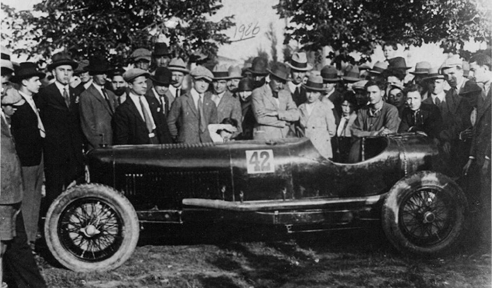
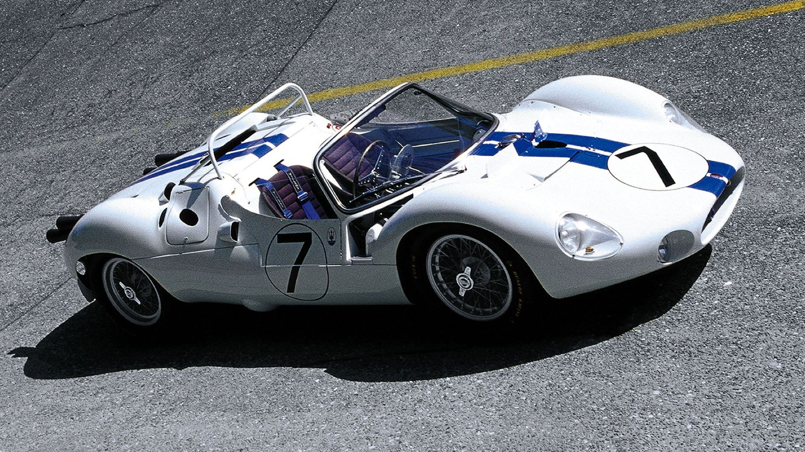

早期岁月

1914年12月1日，玛莎拉蒂兄弟在博洛尼亚创办玛莎拉蒂公司，此后便在全球汽车史上盛名不衰。最初，这只是设在博洛尼亚德·佩波利大街1号的一间工作车间，一战爆发后，玛莎拉蒂兄弟开始自行设计汽车。
梦想启航

20世纪初，发动机的性能仍不稳定，故障主要源自发动机的电气系统。1907年，卡洛－玛莎拉蒂通过调整比安奇电气系统的电压，解决了燃烧室内点火失败的问题。这极大提高了发动机工作的稳定性，使发动机性能更出色，功率输出更持久。
享誉世界

1956年的F1大奖赛成为意大利摩德纳两大汽车品牌——法拉利和玛莎拉蒂争夺荣耀的战场。当时，摩德纳市民分为两派，一派支持法拉利，一派支持玛莎拉蒂，旗鼓相当。每逢周日，赛车在赛道上摆开架势，激烈对决。星期一上午，获胜队的支持者在市中心的酒吧里或柱廊下得意洋洋地取笑失败者。